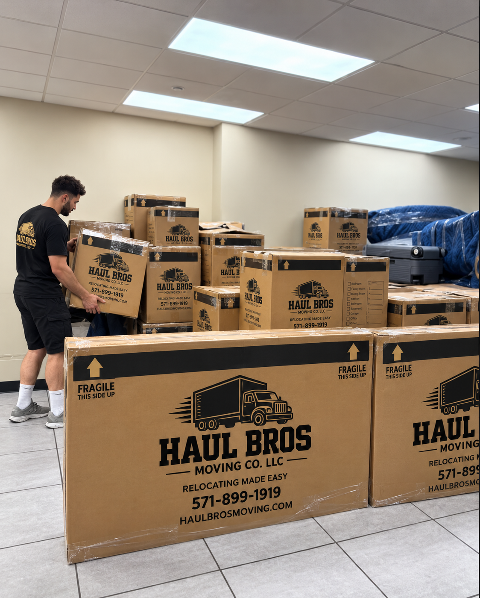

Moving to Woodbridge, VA: Everything You Need to Know Before Relocating (2026–2027 Guide)
Moving to Woodbridge, VA? Explore neighborhoods, housing, schools, commuting, living costs, and moving tips from Haul Bros Moving Co LLC.
Thinking about moving to Woodbridge, Virginia?
Whether you're relocating from Washington, DC, moving from Fairfax County, transferring to Northern Virginia for work, or searching for a new place to raise your family, Woodbridge deserves a closer look.
Located in Prince William County, Woodbridge offers a mix of established residential neighborhoods, shopping centers, waterfront recreation, commuter transportation, and access to the greater Washington, DC metropolitan area.
But before you pack your boxes, there are important questions to consider.
What does it cost to live in Woodbridge? Which neighborhoods should you explore? How difficult is the commute to Washington, DC? What schools serve the area? And how much should you budget for professional movers?
At Haul Bros Moving Co LLC, we're based in the Woodbridge area and help customers relocate throughout Prince William County and Northern Virginia.
This complete relocation guide covers what you need to know before making Woodbridge your new home.
Quick Answer: Is Woodbridge, VA, a Good Place to Live?
Woodbridge can be an excellent choice for people who want suburban housing options, convenient shopping, outdoor recreation, and access to employment centers throughout Northern Virginia and Washington, DC.
Some of Woodbridge's most appealing features include:
- A variety of apartments, townhouses, and single-family homes.
- Access to Interstate 95 and Route 1.
- Virginia Railway Express commuter rail service.
- Shopping at Potomac Mills and Stonebridge at Potomac Town Center.
- Waterfront recreation at Leesylvania State Park and nearby Occoquan.
- Established communities such as Lake Ridge and Dale City.
- Proximity to Fort Belvoir, Quantico, and regional employment centers.
However, prospective residents should carefully evaluate commuting times, housing costs, school assignments, and the characteristics of individual neighborhoods before deciding where to live.
Bottom line: Woodbridge offers an appealing combination of suburban living and regional connectivity, particularly for households whose budgets and commuting needs align with the area.
1. Where Is Woodbridge, Virginia?
Woodbridge is located in eastern Prince William County, approximately 20 miles south of central Washington, DC, by straight-line distance.
The broader Woodbridge area includes communities near Interstate 95, U.S. Route 1, Prince William Parkway, and the Occoquan River.
Woodbridge is not an independent incorporated city. It is a census-designated place and a commonly used geographic and postal designation within Prince William County.
This distinction matters because many properties with Woodbridge mailing addresses are located in surrounding communities such as Lake Ridge and Dale City.
Woodbridge ZIP Codes
Three of the most commonly associated ZIP codes are:
22191: Eastern Woodbridge, including areas near Route 1, the Woodbridge VRE station, and parts of the Potomac River corridor.
22192: Lake Ridge and other western Woodbridge communities, including areas near the Occoquan Reservoir.
22193: Dale City and nearby residential neighborhoods.
ZIP codes are postal boundaries, not precise neighborhood or school district boundaries.
What Cities Are Near Woodbridge?
Woodbridge is conveniently positioned near:
- Occoquan, VA
- Dale City, VA
- Lake Ridge, VA
- Dumfries, VA
- Lorton, VA
- Springfield, VA
- Fairfax, VA
- Manassas, VA
- Quantico, VA
For residents commuting throughout Northern Virginia, the location of a home relative to I-95, Route 1, and commuter transportation can be just as important as the mailing address.
2. Best Neighborhoods and Communities to Explore in Woodbridge, VA
One of the biggest advantages of moving to Woodbridge is the variety of residential communities available.
Rather than declaring one neighborhood the best for everyone, it's more useful to compare locations based on your housing needs, commute, budget, and lifestyle.
Lake Ridge, VA — Established Residential Communities and Outdoor Recreation
Lake Ridge is a well-established community in the western Woodbridge area.
It offers a mix of townhouses, condominiums, and detached homes, with many neighborhoods near parks and wooded areas.
One of its major attractions is Lake Ridge Park, located along the Occoquan Reservoir.
Residents can enjoy opportunities for boating, fishing, walking, and outdoor recreation.
Consider Lake Ridge if you want:
- Established suburban neighborhoods.
- A variety of home types.
- Access to parks and the Occoquan Reservoir.
- Residential communities away from the busiest Route 1 commercial corridors.
Before purchasing a home, investigate HOA fees, property conditions, and the commute from your specific address.
Dale City, VA — Variety of Housing and Everyday Conveniences
Dale City is one of the largest residential communities in the Woodbridge area.
Developed beginning in the 1960s, it contains a wide variety of established neighborhoods, shopping areas, parks, and community amenities.
Dale City is particularly worth exploring if you're looking for a townhouse or single-family home and want access to everyday shopping and recreation.
Consider Dale City if you want:
- Established residential neighborhoods.
- Different housing sizes and styles.
- Convenient access to Dale Boulevard and nearby shopping.
- Local parks and recreation facilities.
Housing conditions and prices vary by street, property age, and home type.
Eastern Woodbridge — Shopping, Transit and Route 1 Access
Eastern Woodbridge includes residential communities near U.S. Route 1, the Woodbridge VRE station, and major shopping destinations.
This area may appeal to residents who prioritize access to commuter rail, retail centers, and regional transportation.
Consider eastern Woodbridge if you want:
- Proximity to the Woodbridge VRE station.
- Convenient shopping and dining.
- Apartment and townhouse options.
- Access to Route 1 and I-95.
As with any busy transportation corridor, evaluate traffic, noise, parking, and walkability at the specific property.
Belmont Bay — Waterfront-Oriented Residential Living
Belmont Bay is a residential community in eastern Woodbridge near the Occoquan River and the Potomac River waterfront.
It includes condominium, townhouse, and other residential options.
The area may appeal to buyers who prefer a planned residential environment with proximity to waterfront scenery and commuter transportation.
Consider Belmont Bay if you want:
- A waterfront-oriented neighborhood.
- Condominium and townhouse options.
- Access to nearby recreation.
- Proximity to the Woodbridge commuter rail station.
Review condominium or HOA fees and property-specific flood considerations before making a purchase.
Occoquan, VA — Historic Small-Town Atmosphere
Occoquan is a separate incorporated town located just north of Woodbridge.
It is known for its historic downtown, independent shops, restaurants, and riverfront setting.
Occoquan is worth considering for residents who prefer a smaller-town environment within the larger Northern Virginia region.
Consider Occoquan if you want:
- Historic architecture and local businesses.
- A walkable downtown area.
- Riverfront recreation and dining.
- A distinctive small-town atmosphere.
Because Occoquan is geographically small, housing inventory may be more limited than in surrounding communities.
Which Woodbridge Neighborhood Should You Choose?
| Community | Key Consideration |
|---|---|
| Lake Ridge | Established neighborhoods and outdoor recreation |
| Dale City | Variety of residential housing |
| Eastern Woodbridge | Retail access and commuter transportation |
| Belmont Bay | Waterfront-oriented residential setting |
| Occoquan | Historic downtown and small-town atmosphere |
The right choice depends on your individual priorities. Visit several neighborhoods during weekdays and weekends before committing to a lease or purchase.
3. Cost of Living in Woodbridge, VA
Before relocating, it's important to understand the financial realities of living in Woodbridge.
Your total cost of living will depend on housing, transportation, utilities, groceries, childcare, insurance, and household needs.
Housing Costs
According to the U.S. Census Bureau's 2020–2024 American Community Survey estimates for the Woodbridge census-designated place:
- Median owner-occupied home value: approximately $422,400.
- Median gross monthly rent: approximately $2,101.
- Median monthly owner costs with a mortgage: approximately $2,289.
These figures are historical Census estimates, not current listing prices or forecasts for 2027.
Actual prices can vary substantially between apartments, townhouses, condominiums, and detached homes.
For the most current property prices, compare active listings and recent sales in the neighborhoods you're considering.
Additional Monthly Expenses
Beyond housing, plan for:
Transportation: Vehicle payments, insurance, fuel, tolls, parking, and transit fares.
Utilities: Electricity, water, sewer, internet, and heating or cooling.
Groceries: Household food and everyday necessities.
Childcare: Daycare, after-school programs, or other childcare arrangements.
HOA or Condo Fees: Some communities have monthly or quarterly association fees.
Property Taxes: Homeowners should verify current Prince William County property tax rates and assessments.
Is Woodbridge More Affordable Than Fairfax or Arlington?
Woodbridge is often considered by households looking for housing alternatives to locations closer to Washington, DC.
However, affordability should be measured by the total monthly cost rather than home price alone.
For example, a household may save on housing but spend more on commuting, tolls, fuel, and vehicle maintenance.
Compare specific properties and commuting arrangements before deciding that one location is less expensive.
4. Commuting From Woodbridge to Washington, DC and Northern Virginia
Transportation is one of the most important factors to consider before moving to Woodbridge.
Many residents work outside Prince William County, including in Fairfax County, Arlington, Alexandria, and Washington, DC.
Driving on Interstate 95
Interstate 95 is a major transportation corridor connecting Woodbridge to Northern Virginia and the Washington metropolitan area.
However, traffic congestion can be significant during weekday commuting periods.
If you plan to drive regularly, test your commute during the actual hours you expect to travel.
Do not rely only on weekend driving times.
Virginia Railway Express (VRE)
Woodbridge has a VRE commuter rail station at:
1040 Express Way, Woodbridge, VA 22191.
The station serves the Fredericksburg Line, providing rail connections toward Alexandria, Crystal City, and Washington, DC.
VRE can be an attractive alternative for commuters whose work schedules and destinations align with its service.
Check current train schedules, fares, and service announcements at:
OmniRide Bus Transportation
OmniRide operates local and commuter bus services in the Prince William County region.
Depending on the route, residents can connect to destinations such as the Woodbridge VRE station, shopping areas, commuter lots, and regional transportation hubs.
Review current routes and schedules at:
Is Woodbridge Good for Commuters?
Woodbridge may work well for commuters who have flexible schedules, hybrid work arrangements, convenient transit access, or employment in nearby communities.
For someone required to drive into central Washington, DC during peak rush hour every weekday, congestion should be a major consideration.
Local tip: When comparing homes, calculate both housing expenses and the full cost of commuting.
5. Schools and Education in Woodbridge, VA
Families moving to Woodbridge often ask:
"What schools will my children attend if we move to Woodbridge?"
Public schools in the area are primarily served by Prince William County Public Schools (PWCS).
The school division operates elementary, middle, and high schools throughout Prince William County.
Examples of schools in the broader Woodbridge area include:
- Woodbridge High School.
- Gar-Field High School.
- Freedom High School.
- Lake Ridge Middle School.
- Beville Middle School.
- Antietam Elementary School.
- Belmont Elementary School.
This is not a ranking, and the presence of a school in Woodbridge does not mean every nearby home is assigned to it.
How to Check Your School Assignment
School assignments depend on the specific residential address and current attendance boundaries.
Prince William County Public Schools provides an official school locator:
https://www.pwcs.edu/registration/find_your_school
This is particularly important for families moving in 2026 or 2027 because the district has approved changes to some elementary school attendance boundaries.
What Should Parents Research?
Before selecting a neighborhood, consider:
- Current school attendance boundaries.
- Academic programs and course offerings.
- Transportation eligibility.
- Before- and after-school care.
- Special education and student support services.
- Extracurricular activities.
- School capacity and boundary changes.
For accurate information, use official PWCS resources rather than relying exclusively on real estate listings or outdated neighborhood guides.
6. Things to Do in Woodbridge, VA
Woodbridge offers convenient access to shopping, dining, parks, historic attractions, and waterfront recreation.
Potomac Mills
Potomac Mills is one of the region's major outlet shopping destinations.
Located at 2700 Potomac Mills Circle, it features a large selection of retail stores and dining options.
For residents, it provides convenient access to shopping without necessarily traveling into Fairfax County or Washington, DC.
Stonebridge at Potomac Town Center
Stonebridge is a shopping and dining destination in Woodbridge with retail stores, restaurants, and entertainment.
It provides another convenient gathering and shopping area for local residents.
Leesylvania State Park
Located along the Potomac River, Leesylvania State Park offers opportunities for hiking, fishing, picnicking, and enjoying waterfront scenery.
It is a popular destination for residents who enjoy outdoor recreation.
Neabsco Creek Boardwalk
The Neabsco Creek Boardwalk provides a scenic opportunity to explore wetland habitat and observe local wildlife.
It is an attractive destination for walking, photography, and enjoying nature.
Lake Ridge Park
Lake Ridge Park offers reservoir access, boating opportunities, trails, picnic facilities, and recreational amenities.
Historic Occoquan
The nearby Town of Occoquan features local shops, restaurants, historic buildings, and a waterfront atmosphere.
Veterans Memorial Park
This Prince William County park provides recreational facilities, sports opportunities, and community amenities.
For new residents, exploring these destinations is a great way to become familiar with the Woodbridge area after moving.
7. What Are the Advantages and Disadvantages of Living in Woodbridge?
Every location has trade-offs.
Potential Advantages
Housing Variety: Woodbridge offers apartments, condominiums, townhouses, and single-family homes.
Regional Accessibility: Residents can access I-95, Route 1, VRE, and OmniRide transportation.
Shopping and Dining: Potomac Mills, Stonebridge, and other commercial centers offer convenient amenities.
Outdoor Recreation: Parks, waterways, and nearby natural areas provide recreational opportunities.
Neighborhood Choice: Communities range from established suburban neighborhoods to waterfront-oriented residential developments.
Potential Disadvantages
Traffic Congestion: I-95 and surrounding roads can experience significant delays.
Commuting Expenses: Tolls, fuel, parking, and vehicle maintenance can add up.
Car Dependence: Many residential areas are easier to navigate with a personal vehicle.
Housing Competition: Desirable properties may attract considerable interest, depending on market conditions.
Property-Specific Costs: HOA fees, condo fees, maintenance, and taxes can affect affordability.
Our Recommendation
Before moving, visit Woodbridge at different times of day.
Explore the neighborhoods, test your commute, visit nearby shopping centers, and review the specific costs associated with your prospective home.
8. How Much Does It Cost to Hire Movers in Woodbridge, VA?
Moving costs depend on home size, inventory, distance, accessibility, and the number of movers required.
At Haul Bros Moving Co LLC, we offer transparent standard moving rates for qualifying local relocations.
Haul Bros Moving Co LLC — Local Moving Rates
| Moving Package | First 2 Hours | Additional Hour |
|---|---|---|
| 2 Movers + Truck | $395 | $159 |
| 3 Movers + Truck | $495 | $189 |
| 4 Movers + Truck | $695 | $249 |
| 2 Movers — Labor Only | $295 | $125 |
Our standard moving services include a two-hour minimum.
Example: One-Bedroom Apartment Move in Woodbridge
A customer is moving from an apartment near Potomac Mills to another apartment in Lake Ridge.
Assume two movers and a truck complete the move in four hours.
First two hours: $395 Additional two hours: $318
Illustrative total: $713
Example: Two-Bedroom Townhouse Move in Dale City
A family is relocating from a two-bedroom townhouse in Dale City to another home in Woodbridge.
Assume three movers and a truck complete the move in five hours.
First two hours: $495 Additional three hours: $567
Illustrative total: $1,062
Example: Larger Home Move in Lake Ridge
A family is relocating from a larger home in Lake Ridge to a nearby property.
Assume four movers and a truck complete the move in seven hours.
First two hours: $695 Additional five hours: $1,245
Illustrative total: $1,940
These are hypothetical examples calculated using Haul Bros' standard rates, not guaranteed quotes or measured local averages. Actual costs depend on inventory, access, travel, services, and applicable written terms.
9. Why Choose Haul Bros Moving Co LLC for Your Woodbridge Move?
If you're moving to Woodbridge, working with a moving company based in the area can help simplify the planning process.
Haul Bros Moving Co LLC is based in the Woodbridge area and serves customers throughout Prince William County and Northern Virginia.
We provide moving services for apartments, townhouses, single-family homes, offices, and qualifying specialty items.
Our Moving Services Include
Local Residential Moving
Professional loading, transportation, and unloading for local household relocations.
Long-Distance Moving
Relocation assistance for qualifying longer-distance moves, subject to applicable operating authority.
Packing and Unpacking
Packing assistance for customers who need help preparing belongings for transportation.
Labor-Only Moving
Loading and unloading assistance for rental trucks, moving containers, and storage-related moves.
Furniture Disassembly and Reassembly
Disassembly and reassembly of qualifying furniture.
Senior Moving
Moving assistance for older adults relocating or downsizing.
Military Moving
Moving services for eligible military families and service members.
Commercial Moving
Office furniture relocation and business moving services.
Specialty-Item Moving
Transportation of qualifying heavy or oversized items following an assessment.

What Is Included in Our Standard Moving Services?
Our standard moving packages include:
- Professional moving crew.
- Moving truck when selected.
- Furniture moving blankets.
- Shrink wrap for appropriate furniture.
- Dollies and standard moving equipment.
- Basic floor protection.
- Qualifying furniture disassembly and reassembly.
- Loading and unloading.
- Furniture placement at the destination.
We emphasize transparent pricing without separate standard fees simply for stairs, elevators, fuel, or routine moving equipment.
Specialized services and additional packing materials should be discussed before booking.

10. Complete Moving to Woodbridge, VA Checklist
Preparing early can help make your relocation more organized.
6–8 Weeks Before Moving
- Research Woodbridge neighborhoods.
- Compare housing options and monthly expenses.
- Review commuting routes.
- Verify school assignments if applicable.
- Create a moving budget.
- Research moving companies.
- Request written estimates.
- Identify specialty items.
3–4 Weeks Before Moving
- Confirm your moving company.
- Reserve your preferred moving date.
- Begin decluttering.
- Arrange utility transfers.
- Research internet providers.
- Order packing materials.
- Confirm building access requirements.
- Begin updating important addresses.
1–2 Weeks Before Moving
- Pack nonessential belongings.
- Label boxes by room.
- Confirm your moving inventory.
- Schedule any necessary elevator reservations.
- Prepare appliances according to manufacturer instructions.
- Organize important documents.
- Confirm the moving crew's arrival window.
Moving Day
- Meet your moving crew.
- Review furniture and inventory.
- Keep valuables and essential documents secure.
- Confirm loading and unloading instructions.
- Inspect the old residence before leaving.
- Direct furniture placement at the new home.
- Complete a final walkthrough.
After Moving
- Confirm utility and internet service.
- Unpack essential belongings.
- Update your driver's license and vehicle records as required.
- Register children for school if applicable.
- Update your address with banks, insurers, and other providers.
- Explore nearby parks, shopping, and community amenities.
11. Moving to Woodbridge From Another Northern Virginia Community
Haul Bros Moving Co LLC helps customers relocate to Woodbridge from surrounding communities.
Moving From Fairfax to Woodbridge
If you're relocating from Fairfax County, compare the housing costs, commute, and neighborhood amenities before making your decision.
Moving From Alexandria to Woodbridge
Moving from Alexandria may offer different housing options, but your commute and transit access could change substantially.
Moving From Arlington to Woodbridge
For households leaving Arlington, Woodbridge offers a more suburban environment in many neighborhoods. Consider the trade-off between housing needs and commuting distance.
Moving From Manassas to Woodbridge
Both communities are located in Prince William County, but Woodbridge may offer different transportation connections and shopping access.
Moving From Stafford to Woodbridge
Moving north from Stafford may reduce travel distance to some Northern Virginia employment centers, depending on the destination and commute.
Moving From Washington, DC to Woodbridge
Residents relocating from DC should consider differences in transportation, vehicle ownership, neighborhood design, and everyday expenses.
For any move, the most useful comparison is between your actual current address and prospective new address.
12. Frequently Asked Questions About Moving to Woodbridge, VA
Is Woodbridge, VA, a good place to live?
Woodbridge can be a good choice for people seeking suburban housing, shopping, parks, and regional transportation connections. Its suitability depends on your budget, commute, preferred neighborhood, and lifestyle.
Is Woodbridge, VA, affordable?
Woodbridge offers a range of housing options, but affordability varies by property and household expenses. Compare current listings, property taxes, transportation costs, and HOA fees rather than relying on countywide averages alone.
What are the best neighborhoods in Woodbridge, VA?
Popular communities to explore include Lake Ridge, Dale City, eastern Woodbridge, and Belmont Bay. Nearby Occoquan is another option. The best choice depends on housing preferences, commute, budget, and amenities.
How far is Woodbridge from Washington, DC?
Woodbridge is roughly 20 miles south of central Washington, DC, by straight-line distance. Driving distance and travel time depend on your exact starting point, destination, route, and traffic.
Is Woodbridge good for commuting to DC?
Woodbridge offers I-95 access, VRE commuter rail, and OmniRide bus options. However, peak-hour traffic can be challenging, so test your commute before choosing a home.
Does Woodbridge have a train station?
Yes. The Woodbridge Virginia Railway Express station is located at 1040 Express Way and serves the Fredericksburg Line.
What schools serve Woodbridge, VA?
Woodbridge is served by Prince William County Public Schools. Individual school assignments depend on the residential address and current attendance boundaries.
Is Woodbridge a good place for military families?
Woodbridge may be convenient for some military households because of its regional location and transportation connections. Military families should calculate actual travel times to their assigned installation before selecting a neighborhood.
What ZIP codes are in Woodbridge, VA?
Common Woodbridge ZIP codes include 22191, 22192, and 22193. Neighborhood and school boundaries do not necessarily align with ZIP codes.
Is Lake Ridge part of Woodbridge?
Lake Ridge is a distinct community commonly associated with the broader Woodbridge area and Woodbridge mailing addresses.
Is Dale City the same as Woodbridge?
Dale City is a distinct community in Prince William County, but many Dale City addresses use Woodbridge as their mailing city.
What is there to do in Woodbridge?
Popular attractions include Potomac Mills, Stonebridge at Potomac Town Center, Leesylvania State Park, Neabsco Creek Boardwalk, and Lake Ridge Park.
Do I need a car to live in Woodbridge?
Many residents find a car useful because housing, shopping, and employment destinations are spread across the area. Public transportation is available, but convenience depends on the specific neighborhood and schedule.
How much do movers cost in Woodbridge, VA?
Haul Bros Moving Co LLC's standard two-mover-and-truck package starts at $395 for the first two hours, with additional time at $159 per hour for qualifying moves. Larger crews and specialized services have different pricing.
Do movers in Woodbridge charge extra for stairs?
Moving company policies vary. Haul Bros does not charge a separate standard stair fee, although stairs can affect the total moving time.
Can I hire movers for a small apartment in Woodbridge?
Yes. Haul Bros offers moving services for studios, one-bedroom apartments, condominiums, townhouses, and larger homes.
Do Woodbridge movers offer packing services?
Haul Bros provides packing and unpacking assistance for qualifying moves. Request an estimate based on the number of rooms and amount of belongings.
How far in advance should I book movers in Woodbridge?
Booking two to four weeks in advance is a useful target for many local moves. Larger relocations and popular dates may require earlier planning.
Does Haul Bros offer military, senior, or student discounts?
Yes. Haul Bros offers eligible customers a 5% military discount, 5% senior discount, or 5% student discount, subject to the applicable booking terms.
How do I get a moving quote in Woodbridge, VA?
Contact Haul Bros Moving Co LLC with your preferred moving date, pickup and delivery addresses, home size, furniture inventory, and access information.
13. Ready to Move to Woodbridge, VA? Get a Free Moving Estimate
Whether you're moving into your first apartment, purchasing a townhouse in Dale City, relocating to Lake Ridge, or settling into a larger home in Woodbridge, Haul Bros Moving Co LLC can help you prepare for your next move.
We provide professional residential moving, packing, labor-only services, commercial moving, and qualifying specialty-item transportation.
Contact Haul Bros Moving Co LLC
Haul Bros Moving Co LLC *Relocating made easy.*
Phone: (571) 899-1919 Email: info@haulbrosmoving.com Website: https://www.haulbrosmoving.com USDOT: 4497497
Primary Service Areas: Woodbridge, Dale City, Lake Ridge, Occoquan, Dumfries, Triangle, Manassas, Fairfax, Springfield, Lorton, Stafford, Fredericksburg, and surrounding Northern Virginia communities.
Request Your Free Moving Quote
To help us prepare an accurate estimate, please provide:
- Your preferred moving date.
- Pickup and delivery addresses.
- Home size and approximate furniture inventory.
- Stairs, elevators, or other access conditions.
- Any specialty items.
- Packing or additional moving service requirements.
Contact Haul Bros Moving Co LLC today to plan your move to Woodbridge, Virginia.
Final Thoughts: Is Moving to Woodbridge, VA, Right for You?
Woodbridge offers an appealing combination of established neighborhoods, housing variety, shopping, outdoor recreation, and access to the greater Northern Virginia region.
For some households, it can provide the right balance of space, amenities, and convenience.
For others, commuting time, transportation expenses, or specific housing requirements may make a different location more suitable.
The best decision starts with researching individual neighborhoods, understanding your budget, and planning your relocation carefully.
When you're ready to make the move, Haul Bros Moving Co LLC is here to help with professional moving services throughout Woodbridge and Northern Virginia.
Haul Bros Moving Co LLC — Relocating made easy.